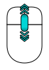
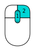

Contents
Что нового?
- Version 0.17 Release notes : Что нового в выпуске FreeCAD 0.17
- Version 0.16 Release notes : Что нового в выпуске FreeCAD 0.16
- Version 0.15 Release notes : Что нового в выпуске FreeCAD 0.15
- Version 0.14 Release notes : Что нового в выпуске FreeCAD 0.14
- Version 0.13 Release notes : Что нового в выпуске FreeCAD 0.13
- Version 0.12 Release notes : Что нового в выпуске FreeCAD 0.12
- Version 0.11 Release notes : Что нового в выпуске FreeCAD 0.11
Введение
FreeCAD - это приложение САПР для параметрического моделирования. Его в первую очередь создавали для машиностроительного проектирования, однако оно также поддерживает и иные варианты использования в случаях, когда нужно моделировать 3D объекты с заданной точностью и контролем над историей моделирования.
FreeCAD все еще находится в ранней стадии разработки, так что, хотя он уже предлагает большой (и растущий) список возможностей, многое, в сравнении с коммерческими решениями, по-прежнему отсутствует, и Вы вряд ли сочтёте его достаточно разработанным для использования в производстве. Тем не менее, у нас есть быстрорастущее сообщество увлеченных пользователей, и вы можете найти множество примеров качественных проектов, разработанных с использованием FreeCAD.
Как и все проекты с открытым кодом, проект FreeCAD не является односторонней работой, предоставленной его разработчиками. Он во многом зависит от роста своего сообщества, усиления возможностей и стабилизации кода (исправления ошибок). Так что не забывайте об этом, когда начнёте использовать FreeCAD. Если вам нравится наш проект, то вы можете непосредственно влиять и помогать проекту!
Установка
Первое, что нужно сделать, если ещё не сделано, это скачать и установить FreeCAD. Смотрите информацию о текущей версии и последних обновлениях на странице загрузки приведена информация, и об установке на соответствующей странице. Имеются готовые пакеты установки на Windows (.msi), Ubuntu и Debian (.deb), openSUSE (.rpm) и Mac OSX. Поскольку у FreeCAD открытые исходные коды, если вы любите приключения и хотите поглядеть на возможности, проектируемые прямо сейчас, Вы можете взять исходные коды и скомпилировать FreeCAD самостоятельно.
Описание FreeCAD
{kind=link}
- Трёхмерный вид, показывающий содержимое Вашего документа
- Древо проекта, который показывает иерархию и историю конструирования всех объектов в вашем документе
- Редактор свойств, позволяющий просматривать и изменять параметры выбранных обёктов
- Окно отчётов, где FreeCAD печатает сообщения, предупреждения и ошибки
- Консоль python, где все печатаются все команды, выполняемые FreeCAD, и где можно ввести код python
- Переключатель верстаков, где Вы можете выбрать активный верстак
Основная концепция интерфейса FreeCAD в разделении её на верстаки. Верстаки представляют собой набор инструментов, приспособленных для отдельной задачи, такой как работа с сетями, или черчение двумерных объектов, или эскизов с направляющими. Текущий верстак можно переключить с помощью селектора (6). Есть возможность настроить инструменты каждого верстака, добавить их из другого верстака или даже создать самим, которые мы называем макросы. Есть так же универсальный верстак, который предлагает наиболее часто используемые инструменты из остальных рабочих столов, который называется полное рабочее окружение (complete workbench).
При старте Вам будет показан центр запуска FreeCAD:

Центр запуска позволяет быстро переключиться на один из наиболее часто используемых верстаков, открыть один из последних файлов, или посмотреть последние новости из мира FreeCAD. Рабочий стол по умолчанию можно изменить в настройках.
Навигация в 3D пространстве
В FreeCAD есть несколько режимов навигации, которые меняют способ использования мыши для взаимодействия с объектами в трёхмерном окне и сам вид. Один из них сделан под тачпады, где средняя кнопка не используется. Нижеследующая таблица показывает режим по умолчанию, называемый CAD' (Можно быстро сменить текущий режим навигации правым кликом на пустом месте трёхмерного вида):
| Выбор | Сдвиг | Масштаб | Вращать | Вращать
Альтернативный метод |
|---|---|---|---|---|

|

|
 | 
|
 |
| Нажмите на левую кнопку мыши над объектом который вы хотите выбрать. Удержание ctrl позволяет выделить несколько объектов. | Щелкните на среднюю клавишу мыши и двигайте для смещения вида. | Используйте колесо мыши для увеличения и уменьшения изображения. Нажатие средней кнопки мыши ставит центр изображения по местоположению курсора. | Сначала нажмите на среднюю кнопку мыши, и, удерживая, нажмите левую кнопку мыши и тяните в нужном направлении. Положение курсора на месте клика средней кнопки мыши устанавливает центр вращения. Вращение работает как кручение шара вокруг своего центра. Если кнопки отпущены во время движения кнопки, объект продолжает вращение, при соответствующей настройке. Двойной клик средней кнопкой устанавливает новый центр вращения. | Сначала нажмите на среднюю кнопку мыши, и, удерживая, нажмите левую кнопку мыши и тяните в нужном направлении. Этот метод работает как предыдущий с использованием средней кнопки + левой кнопки мыши, за исключением того, что средняя кнопка мыши может быть отпущена после того как нажата правая кнопка. Для пользователей, использующих мышь правой рукой, могут найти этот метод удобнее предыдущего. |

|

|
|
||
| Нажмите и удерживайте клавишу Ctrl и нажмите и отпустите правую кнопку мыши для сдвига (версия 0.14) | В режиме сдвига нажмите и отпустите левую кнопку мыши для масштабирования, для возврата в режим сдвига нажмите правую кнопку мыши (версия 0.14) | В режиме сдвига нажмите и на мгновение удержите левую кнопку мыши для вращения, для возврата в режим сдвига нажмите и отпустите правую кнопку мыши (версия 0.14) |
{kind=link}
{kind=link}
Вы так же можете выбрать несколько стандартных видов(вид сверху, спереди и т.д.) из меню Вид, на панели инструментов Вид, а также с помощью горячих клавиш (1, 2, и т.д.), а правым кликом на пустом месте трёхмерного вида Вы получите доступ к некоторым общим операциям, таким как выбор отдельного вида или нахождение объекта в Древе проекта.
Первые шаги в FreeCAD
FreeCAD ориентирован на создание высокоточных трёхмерных моделей, сохранение четкого контроля над этими моделями (сохранение возможности вернуться назад по истории модели и изменить параметры), и при нужде изготовить эти модели (через трёхзмерную печать, станками с ЧПУ или на заводе). Поэтому он отличается от некоторых других трёхмерных приложений, сделанных для других целей, таких как создание анимации или игр. Его кривая обучения может быть сложной для освоения, особенно если это ваш первый контакт с 3D-моделирования. Если Вы застряли на каком-то месте, не забудьте, что дружественное сообщество пользователей на форуме FreeCAD способно быстро подсказать Вам выход.
Верстак, с которого Вы начнёте использование FreeCAD, зависит от типа работы, которую Вам надо выполнить: если Вам нужно работать над механической моделью, или вообще над любым небольшим объектом, Вам возможно подойдёт верстак PartDesign. Если Вы работаете на плоскости, то переключитесь на верстак Draft, или верстак Sketcher, который позволяет работу с ограничениями. Если Вам требуется разработка здания по BIM, переключитесь на Arch Workbench. Для работы над плавательными средствами имеется специальный верстак Ship. А если Вы привыкли к OpenSCAD, попробуйте верстак OpenSCAD.
Верстак можно переключить в любой момент, а так же настроить ваш верстак и добавить инструменты с других верстаков.
Работа с верстаками PartDesign и Sketcher
Верстак PartDesign спроектирован для создания сложных объектов, начиная с простых форм и добавляя и удаляя элементы (которые мы называем "features"), пока Вы не получите итоговый объект. Все элементы, которые Вы добавите во время моделирования, сохраняются в отдельном виде, называемом древом проекта, который так же содержит другие объекты вашего документа. Объект PartDesign можно понимать как последовательность операций, применяемых к результатам предыдущих, создавая одну большую цепочку. В древе проекта виден финальный объект, но Вы можете раскрыть его и восстановить все предшествующие стадии и изменить любые их параметры, которые автоматических обновят финальный объект.
Верстак PartDesign широко использует другой верстак, Sketcher. Он позволяет рисовать плоские эскизы, которые определяются установкой ограничений (Constraints) к двумерной форме. Например, Вы можете нарисовать прямоугольник и установить размер стороны применением ограничений к одной из сторон. Размеры этой стороны теперь могут быть изменены лишь при изменении ограничений.
Эти двумерные формы, созданные в верстаке эскизов, широко используются в верстаке PartDesign, например, для создания трёхмерных объёмов или черчения полей на гранях вашего объекта, которые затем будут выдолблены из вашего объёма. Вот типичный рабочий процесс PartDesign:
- Создать новый эскиз
- Нарисовать замкнутую фигуру (необходимо убедиться, что все точки соединены)
- Закрыть эскиз
- Растянуть эскиз в твердое тело с помощью pad tool
- Выбрать одну грань твердого тела
- Создать второй эскиз (на этот раз он будет нарисован на выбранной грани)
- Нарисовать замкнутую фигуру
- Закрыть эскиз
- Создать карман из второго эскиза на первом объекте
Что создаст объект вроде этого:

В любой момент Вы можете выделить оригинальный эскиз и изменить его или или изменить параметр выдавливания операции pad или pocket, что изменит итоговый проект.
Работа с верстаками Draft и Arch
Верстаки Draft и Arch действуют немного по-разному, хотя они следуют общим правилам для FreeCAD. Если коротко, Sketcher и PartDesign созданы в первую очередь для проектирования единых деталей, а Draft и Arch для работы с несколькими простыми объектами.
Верстак Draft предоставляет двумерные инструменты вроде тех, что можно найти в традиционных двумерных САПР вроде AutoCAD. Тем не менее двумерное черчение находится вне задач FreeCAD, и не ожидайте найти здесь полное множество инструментов, которые предлагают эти специализированные инструменты. Большинство инструментов верстака Draft работают не только на плоскости, но и в объёме, и получают пользу от специальных вспомогательных систем вроде выбора плоскости и привязки к объектам.
Верстак Arch добавляет FreeCAD инструмент BIM, позволяя создавать архитектурные модели через параметрические объекты. Верстак Arch зависит от других модулей, таких как Draft и Sketcher. Все инструменты Draft так же имеются в верстаке Arch, и большинство инструментов Arch используют вспомогательные системы Draft.
Типичный рабочий процесс с верстаками Arch и Draft может быть таким:
- Нарисовать набор лилий с помощью инструментаDraft Line
- Выбрать каждую линию и использовать инструмент Wall, чтобы создать стену на каждом из них
- Соединить стены, выбрав их и нажав на инструмент Arch Add
- Создать объект floor (пол), и поместить Ваши стены на него из древа проекта
- Создать объект building, и переместить ваш пол и в него из древа проекта
- Создать окно, нажав на инструмент Window, выбрать предустановки в его панели, затем нажать на поверхность стены
- Добавить размеры, сначала установив рабочую плоскость если необходимо, затем испольжуя инструмент Draft Dimension
В результате получится следующее:

Дальнейшее на странице Учебники (то же на английском).
Скрипты
И в заключение, один из самых мощных свойств FreeCAD это скриптовое окружение. Из встроенной консоли python (или из любого другого внешнего скрипта python) можно получить доступ почти ко всем частям FreeCAD, создание и изменение геометрии, изменение отображения объектов на экране, а также доступ и изменение интерфейса. Скрипты могут быть использованы в макросах, с помощью которых легко создавать свои команды.